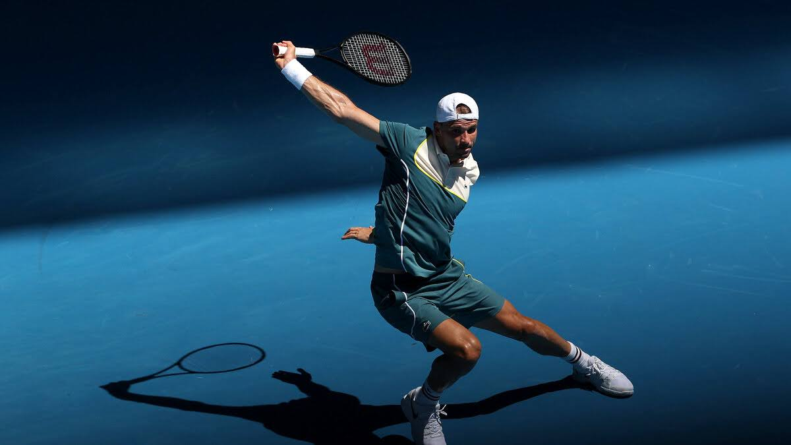

One-Handed Backhands: Endangered but not Extinct
In 2023, Stefanos Tsitsipas reached a career milestone as an Australian Open finalist. Just one year later, he failed to advance past the fourth round of the same tournament. Following a 4-set loss against Taylor Fritz…